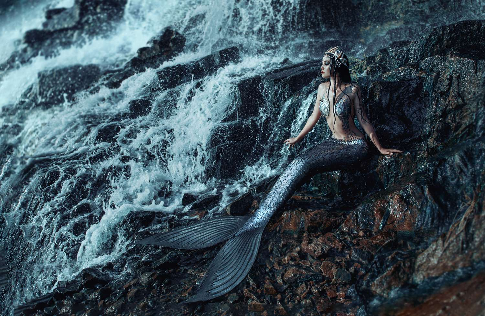

Mermaids as Symbols
From beautiful & kind to dangerous & evil, mermaids serve as a variety of symbols in literature and pop culture.
Key Takeaways
- Mermaids have a rich history and are featured in the mythologies and folklore of many cultures around the world.
- Mermaids symbolize femininity, beauty, and allure, and have increasingly been embraced as feminist icons.
- Throughout history, mermaids have been represented in art, literature, and fashion, each with its unique cultural interpretation.
- The symbolic meaning and cultural importance of mermaids differ across regions, reflecting variations in their portrayal and mythological roles.

Common Mermaid Symbols
| Symbol | Description |
|---|---|
| Femininity and Sensuality | Mermaids are often symbols of femininity, representing the enchanting allure and beauty of women. Their dual nature as both human and aquatic beings highlights the complexity of femininity, encompassing both nurturing and dangerous aspects. |
| Transformation and Change | In many myths, mermaids embody the theme of transformation, such as the transition between different stages of life or the balance between spiritual and physical realms. Their ability to move between land and sea symbolizes fluidity and the capacity for change. |
| Danger and Temptation | Traditionally, mermaids are associated with danger, particularly in their role as sirens who lure sailors to their doom. They represent the idea that beauty and allure can be deceptive, masking peril beneath the surface. |
| Connection to Nature | As creatures of the sea, mermaids symbolize the deep connection between humans and the natural world. They often represent the mysterious and unpredictable nature of the ocean, embodying both its beauty and its threats. |